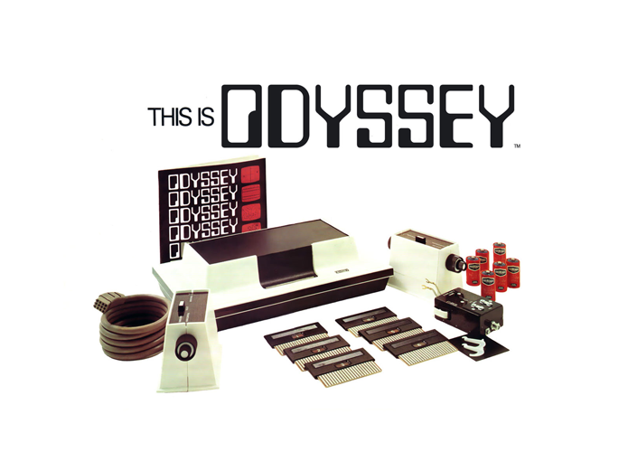
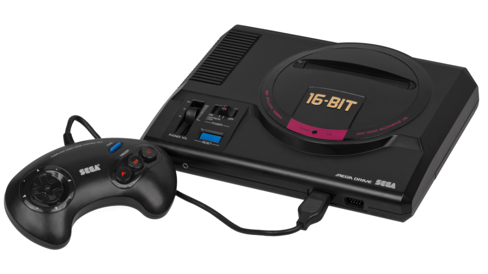
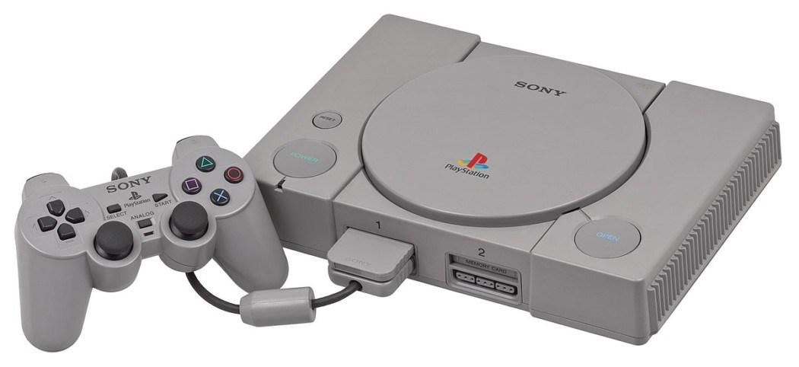

Magnavox Odyssey
Em 1972 nasceu o primeiro console de videogame lançado na história, batizado de Magnavox Odyssey. A ideia surgiu com Ralph Baer em 1966, com o intuito de criar algo que pudesse interagir com a TV.
O primeiro protótipo foi criado em 1968 e batizado como Brown Box (Caixa Marrom). Não durou muito para Baer vender o projeto para a Magnavox, subsidiária da Philips. Apesar de não suportar qualquer tamanho de tela de televisão, ter apenas 29 jogos e não reproduzir sons, o videogame rendeu um relativo sucesso para a época, e vendeu 100 mil unidades. Custava cerca de 100 dólares, o que equivale a 550 dólares ou 2200 reais em valores atuais.
Dada a simplicidade dos processadores disponíveis, os jogos não tinham cores e ambientes complexos. Além disso, jogador precisava colocar um filtro plástico, vendido com os game cards, na frente da tela da TV para dar a ilusão de linhas, cenários, cores e contornos durante o gameplay.
Para completar, o Odyssey era vendido com dados, fichas de poker, dinheiro de mentira e tabelas de pontuação. A ideia era que os jogadores encarassem o game como um tipo de jogo de tabuleiro digital, daí a necessidade desses acessórios curiosos.
Atari 2600

Responsável por revolucionar a história dos games, o Atari foi lançado em 1977 e carrega histórias curiosas por trás. Em 1970, Nollan Bushnel consertava fliperamas em Utah, cidade que fazia faculdade. Após pedir demissão do emprego, mostrou sua ideia a um antigo colega, Ted Dabney, para criar um fliperama novo.
Apenas em 1972 os amigos nomearam o console de Atari, depois que uma construtora “roubou” o nome do antigo console Syzygy. Naquele ano foi lançado Pong, um dos principais jogos do fliperama.
O Atari foi ganhando forma com o tempo, mas ainda não era suficiente, já que os amigos queriam jogar o fliperama em casa. Em 1976 o primeiro protótipo de videogame doméstico foi lançado.
Com um videogame inovador para a época, Nollan poderia lançar qualquer jogo para consoles Atari. Partindo dessa ideia, Nolan e Tedy pediram ajuda de um garoto chamado Steve Jobs para montar o Breakout, um dos maiores sucessos da Atari.
O “fim do início” da Atari aconteceu em 1976 também. Steve Jobs saiu para fundar a Apple, Nollan Bushnell precisave de dinheiro para investir no game, então ele vendeu para a Warner. Daí em diante nasceu Pac-Man e Donk Kong, computadores e outras revoluções tecnológicas da segunda parte da Atari.
Mega Drive
O Mega Drive da Sega chegou para criar mais uma geração de videogames com seus jogos de fitas. O console fez grande sucesso ao criar um controle com manoplas, mas principalmente por apresentar novas cores, gráficos e sons.
Quem não se lembra do Sonic? O jogo idealizado pela Sega era o principal concorrente do Super Mario Bros, herói dos consoles da Nintendo nos anos 90.
Na década de 90 foi grande sucesso e até hoje é possível encontrar consoles em bons estados de conservação. Assim como o Nintendo 64, o Mega Drive perdeu popularidade após a chegada da Sony com o Playstation 1
Super NES

A Nintendo começa a se consolidar no mercado na década de 80, com seu primeiro console Famicom, de 8 bits, o qual foi rebatizado de NES (Nintendo Entertainment System). Sob esta plataforma foram feitos jogos famosíssimos, como Mario e Donkey Kong, por exemplo.
Para concorrer com o Mega Drive, um console de 16 bits, a lançou um dos maiores sucessos de toda a história do videogame: o Super NES. Este é um dos clássicos episódios da batalha dos consoles. Enquanto o aparelho da SEGA tinha mais jogos, o da Nintendo era mais avançado e possuía melhores gráficos.
O SNES foi um sucesso mundial, tornando-se o console mais vendido da época apesar de seu início relativamente tardio e a competição feroz que enfrentou na Europa e América do Norte. O SNES permaneceu popular até a era de 32 bits e continua a ser popular entre os fãs, colecionadores, retro gamers e entusiastas de emulação
Playstation 1
Então surgiu o Playstation, que então dominou a história do videogame. Tudo começou quando a Sony decidiu apostar nos jogos em CD, no entanto, a Nintendo achava cedo abandonar os cartuchos e fitas. Sem acordo, então ela se separaram.
O primeiro videogame da Sony, o famoso Playstation 1 chegou às lojas japonesas em 1994, ainda competindo com os consoles das gerações anteriores. De início não agradou ao público, era difícil adaptar aos novos gráficos e ao controle “moderno”. Contudo, duas características marcaram a história do mundo dos games pra sempre: o Memory Card e o Dual Stick.
O Memory Card era simplesmente um cartão que permitia salvar o jogo, e o usuário poderia continuar da onde parou. Não era algo novo, mas foi adaptado e melhorado, o que foi avaliado como fundamental pelos gamers da época.
Já o controle Dual Stick já caiu nas graças do público, e certamente contribuiu para o sucesso do console, além de influenciar novas gerações de videogames.
Além das grandes inovações, a Sony com seu Playstation 1 lançou jogos considerados icônicos, comoTomb Raider, Winning Elever, Resident Evil, Crash Bandicoot, entre outros.